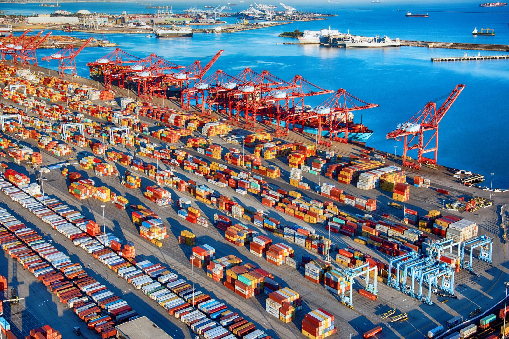
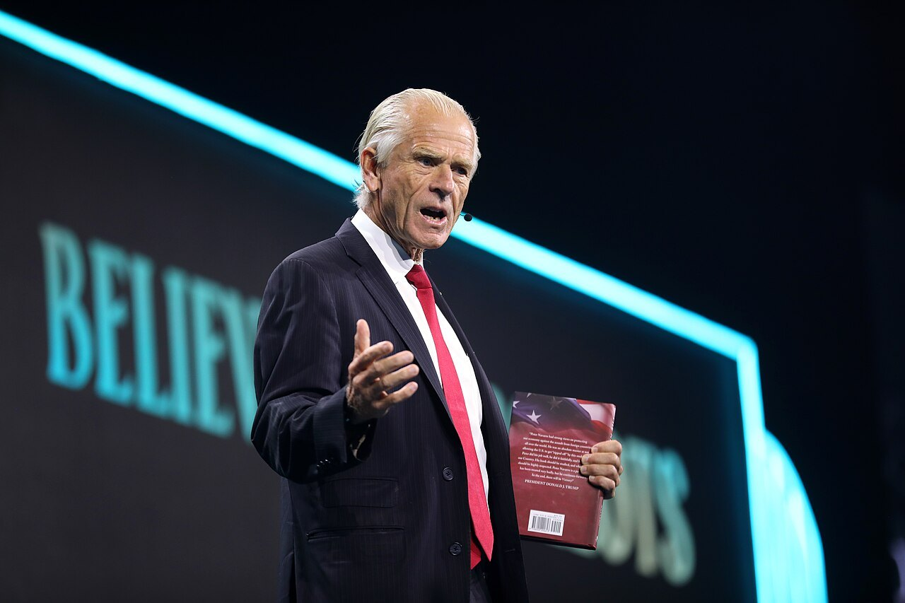
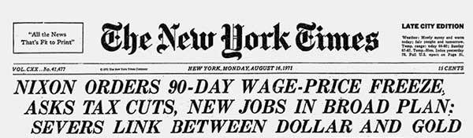
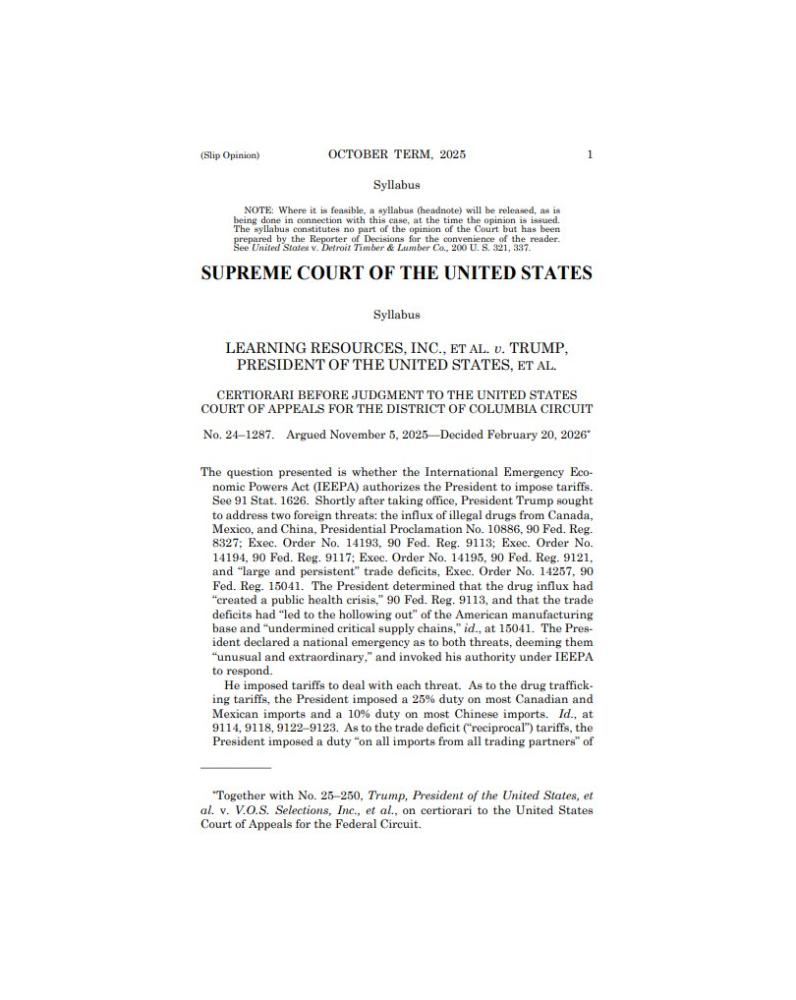

More Than a Tax on Imports
Five things I assumed about tariffs, what the data actually says, and why the real story is more connected (and less scary) than it looks.
Why I'm writing this
I'm a high school senior, not an economist. Almost everything here I learned over a few weeks from textbooks, Federal Reserve research notes, budget reports, and a lot of rabbit holes. So read this as a learning log: what I expected, what the data actually said, and where I'm still confused.
It's also not an argument for or against any politician or party. Smart, well-credentialed people disagree about tariffs, and I'm not in a position to crown a winner. What I can do is try to explain how the machine works. Once you can see the gears, the news looks a lot less random, and honestly a lot less scary.
The plan: five intuitions about tariffs that I had (and I think most people have). For each one, what seems obvious, what the evidence says, and why the real answer is more interesting than either.
First, what's a tariff? It's a tax on imported goods, paid at the border to U.S. Customs by the company bringing the goods in (the "importer of record"). Hold on to that last detail. It matters more than it looks.
Sections marked The math work through the numbers. You can skip them and still follow the story, but they're where each claim gets checked. Click any chart or picture to enlarge it.

1. "Other countries pay the tariff"
Who paysWhat seems obvious: it's a tax on their stuff, so they pay it.
What actually happens: the check is written by an American company to the American government. But economists care about a different question, called tariff incidence: who ends up poorer because of the tax? There are three possible answers, and usually it's a mix:
- The foreign exporter lowers its price to stay competitive.
- The U.S. importer eats the cost out of its profit margin.
- The U.S. consumer pays a higher price at the store.
Here's the cleanest way I've found to see it. A company imports a $100 part, and there's a 25% tariff. If the exporter keeps charging $100, the importer pays $125, and the cost lands on Americans. If the exporter drops its price to $80, the importer pays $80 + $20 tariff = $100, the same as before. In that case the foreign company effectively paid the whole tariff.
So which happened in 2025? Researchers can measure this by comparing prices across millions of shipments, and they don't fully agree:
Most studies: Americans paid 90%+ of the 2025 tariffs
Share of the tariff cost borne in the U.S. (blue) vs. absorbed by foreign exporters (grey)
That disagreement is worth slowing down on, because it's what real research looks like. Most studies say Americans paid most of it. At least one careful study says it was closer to a split. And the share isn't fixed: the New York Fed found foreign exporters paid a growing share as 2025 went on, even though Americans still paid most of it.
Whoever can walk away pays less
Let εd be the buyers' demand elasticity (how much they cut purchases when the price rises 1%) and εs the sellers' supply elasticity (how easily sellers can send their goods somewhere else). Then:
In plain English: whoever has fewer alternatives ends up paying. Say a U.S. importer can't easily switch suppliers (εd = 0.5), but the foreign exporter can easily sell to Europe instead (εs = 1.5):
Sanity check: if sellers truly had nowhere else to sell (εs = 0), buyers would pay 0 / (0 + εd) = 0%, and the exporter would eat the whole tariff. That's exactly the argument that the U.S. market is too big to walk away from. The 2025 data suggest that, at least in the short run, most exporters had more options than American buyers did.
Huh, why? If the U.S. is the world's biggest consumer market, why wouldn't exporters just cut prices to keep selling here? Part of the answer seems to be time. In the short run, an importer can't swap suppliers overnight, and an exporter can sometimes sell its goods somewhere else. Over longer periods, those options change, which is one reason the split can shift.
2. "If we tax imports more, the government gets more money"
RevenueWhat seems obvious: higher tax rate × lots of imports = lots of revenue.
The part that's true: revenue really did jump. Customs revenue went from $84 billion in fiscal year 2024 to $202 billion in fiscal year 2025. For the 2025 calendar year, the budget deficit came in at $1.67 trillion, the smallest in three years, and the record customs haul was a big reason.
Customs revenue ran at about 4× its 2024 pace by late 2025
Federal customs duties, billions of dollars at a seasonally adjusted annual rate, quarterly
Running the numbers
quarterly pace: 367 / 89 ≈ 4.1×
share of budget: 202 / 5,235 ≈ 3.9% of federal revenue (FY2025)
For scale: in 1792, customs duties paid for about 95% of the federal government. Tariffs used to be the federal budget. Today they're a meaningful slice, but they can't replace the income tax.
The twists:
- Tariffs shrink their own base. When something gets taxed, people buy less of it. Yale's Budget Lab tracks this with two numbers: the tariff rate on what we used to import, and the rate after people shift what they buy. In November 2025 those were 16.8% and 14.4%. The gap is imports that disappeared, and the revenue that went with them.
- Where the money comes from. If Americans pay most of the tariff (Intuition 1), then much of this revenue is a tax collected from Americans, just through a different door than April 15.
- It's not all staying. After the Supreme Court struck down the tariffs imposed under the emergency-powers law (Intuition 5), about $166 billion became refundable to importers, with interest. Only the importer can claim it. A shopper who paid a higher price can't.
Why a bigger tariff can raise less money
Revenue is rate × base. Let t be the tariff rate and M(t) the value of imports at that rate. The catch is that M shrinks as t grows. In a simple model, imports fall off with an elasticity ε:
To find the tariff that raises the most money, take the derivative and set it to zero:
ε = 3 → revenue peaks at a 50% tariff
Past that point, raising the rate lowers revenue, because the base shrinks faster than the rate grows. It's the same shape as the Laffer curve. Real elasticities differ by product, so this is a toy model, not a forecast. But it shows why "more tax = more money" is only true up to a point.
Toy model: past a point, higher tariffs raise less money
Revenue = t × imports, with imports = 100 × (1 + t)−ε. Illustrative, not a forecast.
3. "Tariffs should help inflation, since we'll spend less"
InflationWhat seems obvious: if imports cost more, people buy less, less spending cools the economy, and prices calm down.
What happened: this one tripped me up. Inflation is the rate at which prices rise. A tariff directly raises the price of the taxed good, and of anything built from imported parts (a U.S.-made washing machine with imported steel inside, for example). So at least at first, it pushes measured inflation up.
The Fed's economists have measured how much:
- A Federal Reserve note estimated that tariffs put in place through November 2025 raised core goods prices by 3.1% through February 2026, enough to explain all of the "excess" goods inflation compared with before the pandemic.
- The Dallas Fed estimated tariffs added about 0.8 percentage points to core inflation as of March 2026. Without them, core inflation would have been around 2.3%, close to the Fed's 2% target.
- The Boston Fed came in lower. Productivity gains partly offset the tariffs, for a net effect of about 0.5 points.
A step, not a ramp
Call the price level P and normal inflation π. Each year, P gets multiplied by (1 + π). A tariff adds a one-time bump s:
So in year 1, measured inflation ≈ π + s. In year 2 it goes back to π. Plug in the Dallas Fed's numbers:
actual, from the core PCE price index: 129.030 / 125.144 − 1 = 3.1% ✓
The catch: prices don't come back down. In year 2, inflation returns to normal, but everything stays about 0.8% more expensive than it otherwise would have been. A step is permanent. It just stops climbing.
Core inflation: 3.1% actual vs. ~2.3% without tariffs (Mar 2026)
Core PCE prices, % change from a year earlier, monthly
So the intuition isn't completely crazy. Higher prices can reduce what people can afford, which does cool demand a little. That's one reason the Fed treats tariff price bumps carefully instead of slamming on the brakes. But "tariffs lower inflation" isn't what the data shows.
4. "Tariffs make the dollar stronger"
The dollarWhat the textbook says: if Americans buy fewer imports, they need fewer euros, yen, and yuan, so they sell fewer dollars. Less selling means a stronger dollar. Some models predict the dollar rises enough to cancel out part of the tariff.
What happened: the opposite. The U.S. dollar index fell 10.8% in the first half of 2025, its worst first half since 1973, the year currencies started floating freely.
What the textbook expected vs. what happened
The dollar price of an imported good is the foreign price p*, times the exchange rate e (dollars per unit of foreign currency), times one plus the tariff:
Textbook case: a 10% tariff, and the dollar strengthens 10%, so each euro costs 1/1.10 as many dollars:
What actually happened (illustration): the euro rose 13.8% against the dollar in the first half of 2025. A €100 good facing a 10% tariff:
The currency move stacked on top of the tariff instead of canceling it. (10% is just an example rate; actual rates on EU goods changed during the year.)
The dollar fell ~7% in early 2025 instead of rising
Fed broad trade-weighted dollar index (Jan 2006 = 100), monthly average. Textbook prediction: up.
Huh, why? This was my favorite moment of the whole project. The textbook model isn't wrong, but it only covers trade flows, and trade is a small part of what moves a currency. Every day, investors and central banks decide where to keep trillions of dollars of savings, and exchange rates move with their confidence: in growth, policy, debt, and institutions. Analysts at S&P Global pointed to tariffs, worries about the Fed's independence, rising U.S. debt, and inflation fears all together.
To keep this in proportion: even after the drop, S&P noted the dollar was still more than 15% above its long-run average in real terms. And a weaker dollar isn't automatically bad news. It makes American exports cheaper for the rest of the world, which is part of what tariff supporters wanted in the first place.
The bigger lesson: a currency is closer to a vote of confidence than a scoreboard of trade. That idea sets up the deepest part of this story.
5. "This is all arbitrary"
History, ideas, and lawIt can feel that way watching the news: rates announced, paused, raised, struck down. But the more I dug, the more it looked like a very old argument, now running through a very rule-bound system.
1791: Hamilton's blueprint
The tariff debate is as old as the country. The first major tariff, in 1789, was about 5% on most goods and 7.5–10% on some luxury and manufactured items. In 1791, Treasury Secretary Alexander Hamilton sent Congress his Report on Manufactures, a plan for turning a farming nation into an industrial one.

Hamilton supported moderate tariffs, but his favorite tool was bounties, direct subsidies to new industries. In his own words: "Bounties have not like high protecting duties, a tendency to produce scarcity." A subsidy helps the factory without raising prices on shoppers. The irony is that Congress adopted nearly all of Hamilton's tariff proposals in 1792 and rejected the bounties.
Today: the case for tariffs, at its strongest
Peter Navarro, the president's trade adviser, often cites Hamilton. The best version of his argument, as I understand it:
- The playing field isn't level. Free-trade theory assumes fair competition. If a foreign government subsidizes its factories to undercut yours, a small tariff won't protect an industry you need in a war.
- Supply chains are national security. Assembling something in America out of foreign steel and foreign chips doesn't make you resilient.
- Tariffs are leverage. The threat of losing access to the American market can pull other countries to the negotiating table.
You don't have to agree with the tools to see that these concerns are real, and that they're about security and resilience, not just money.

The puzzle underneath: Triffin's dilemma
In 1960, economist Robert Triffin warned Congress about a trap. The dollar had become the world's reserve currency, backed by gold. To supply the world with dollars, the U.S. had to send more of them abroad than it brought home, until there were more dollars overseas than gold to back them. In 1971 that's exactly what happened: President Nixon ended the dollar's convertibility to gold.


Stephen Miran, who has advised the administration, argues a modern version of Triffin still applies. In this view, global demand for dollars keeps the currency overvalued, which makes American exports expensive and wears down manufacturing. If that's right, trade deficits are partly a side effect of the dollar's global role, not just a sign of bad trade deals.
But plenty of economists push back hard:
- Michael Bordo and Robert McCauley argue that foreign central banks no longer drive U.S. deficits, so we're not really in "Triffin land" anymore.
- Others point out that during Bretton Woods, when you'd expect this effect to be strongest, the U.S. never ran a significant current account deficit.
- Dollars can flow abroad through investment instead of trade. And some argue the real issue is persistent government budget deficits, not the reserve role itself.
I can't settle that debate, and it seems nobody has yet. But it's the clearest example of what I mean by global implications. A tax on imported steel connects to the price of U.S. government debt, the world's demand for dollars, and how 1971 played out.
The rules are working
The last thing that made this feel less arbitrary to me: the system has checks, and they visibly worked.
- The Constitution gives Congress the power to tax, including tariffs. Presidents set tariffs under laws Congress has passed.
- On February 20, 2026, the Supreme Court ruled 6–3 that the emergency-powers law (IEEPA) doesn't authorize tariffs at all.
- The administration switched to a different law, Section 122 of the Trade Act of 1974, for a temporary global tariff. That law caps such a tariff at 150 days, so it expired on July 24, 2026.
- The same day, new tariffs of 10–12.5% on 60 economies took effect under Section 301, a law with its own procedures and its own legal challenges.

Average U.S. tariff rate: ~3% → 18% → about 11% today
Yale Budget Lab average effective / statutory tariff rate, %
You can think that's good policy or bad policy. Either way, it isn't chaos. It's laws, courts, deadlines, and refunds, all on the public record.
So did the factories come back?
The scoreboardThis is the question everything else is in service of, and the honest answer is: mixed, and too early to call.
- Factory jobs were already falling before the tariffs: from January 2024 to January 2025, the U.S. lost about 202,000 manufacturing jobs.
- From April 2025 to February 2026, it lost about 79,000 more.
- After bottoming at 12.58 million in December 2025, factories added about 58,000 jobs through August 2026.
- Net change from January 2025 to August 2026: about −35,000.
Factory jobs fell before and after the tariffs, then regained 58,000
U.S. manufacturing employment, millions, seasonally adjusted, monthly (latest revised data)
What's causing what is disputed. Some economists say factory jobs follow overall demand and the economy, not tariffs. Supporters point to gains in metals and transportation manufacturing. And there's a deeper pattern underneath: by mid-2026, factory output was growing even while payrolls weren't. Modern factories can make more with fewer people. That means "bringing manufacturing back" and "bringing manufacturing jobs back" might not be the same goal, which is a whole other article.
Building a factory takes years, not months. If tariffs or the 2025 tax incentives for domestic investment work, a lot of the evidence won't show up until 2027 or later.
A lesson about data: numbers get revised. When I first researched this, news articles said factories had lost 89,000 jobs since April 2025 and were 62,000 below January 2025. The current Bureau of Labor Statistics data show smaller losses (79,000 and 35,000). Nobody lied. The BLS revises its estimates as better survey data come in, especially in its yearly benchmark revision. Always use the latest data, and say when you pulled it.
Why I'm hopeful anyway
Not because any of this is perfect. I'm hopeful because of what I found while trying to understand it.
The economy is legible. Within months of the 2025 tariffs, researchers had gone through tens of millions of shipment records and estimated who paid. Within a year, the Fed could estimate what tariffs did to inflation, almost to the decimal. We're not flying blind, and anyone with an internet connection can pull up the same data I used for every chart on this page.
The disagreements are about tools, not goals. Hamilton, Navarro, and the economists who criticize them all want a strong, secure country that makes things. They disagree about whether tariffs, subsidies, or something else gets you there. That's a debate you can actually have with evidence.
Price shocks fade. A tariff mostly raises prices once. It doesn't lock in permanent inflation, and the Fed knows that.
The rules held. Courts ruled, laws had deadlines, deadlines were met, and money went back to the people who were owed it. Whatever you think of the outcome, the process worked the way it's supposed to.
Understanding replaces fear. "Tariffs" sounded like one simple lever to me. It turns out to be connected to the price of my groceries, the strength of the dollar, a gold crisis in 1971, and a debate from 1791. That's not depressing. It's one of the coolest systems I've ever looked at, and I'm going to keep studying it.
What I still don't know
- Why didn't foreign exporters cut prices more? I understand the theory but not the industry details.
- Is the modern Triffin argument right? Smart people are split, and I'd need to understand capital flows much better to judge.
- Will the investment incentives and tariffs show up as new factories by 2028? Nobody knows yet.
- What happens to tariff policy as the Section 301 cases work through the courts?
What I'm reading next: Douglas Irwin's Clashing over Commerce, the standard history of U.S. trade policy, and Hamilton's actual Report on Manufactures, which is free on Founders Online.
Sources
Chart data pulled from FRED (Federal Reserve Bank of St. Louis) on November 18, 2026.
- Federal Reserve, Detecting Tariff Effects on Consumer Prices in Real Time, Part II (Apr 2026)
- Dallas Fed, Effects of realized tariff changes on PCE prices (May 2026)
- Boston Fed, tariffs, productivity, and core inflation (2026)
- PIIE, Who pays for tariffs? Insights from recent research (2026)
- Tax Foundation, on Caroline Freund's estimate (2026)
- Yale Budget Lab, State of U.S. Tariffs reports and open data
- Bloomberg, Dollar index's biggest first-half loss since 1973 (Jun 2025)
- S&P Global, The dollar after its worst six months in decades (Jul 2025)
- Douglas Irwin, The Aftermath of Hamilton's "Report on Manufactures" (NBER)
- VoxEU, Not Triffin, not Miran
- Council on Foreign Relations, After the Supreme Court ruling (Feb 2026)
- American Bar Association, IEEPA tariffs struck down, replacement tariffs expired (Fall 2026)
- FRED series: MANEMP, DTWEXBGS, PCEPILFE, B235RC1Q027SBEA